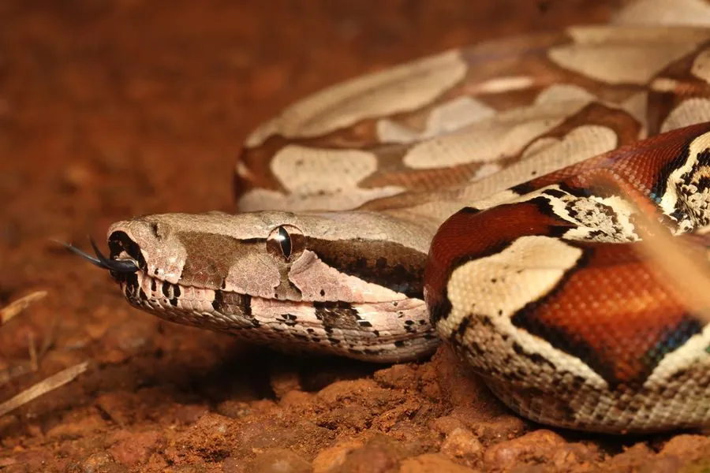

爬行动物 · 动物界
红尾蚺 Boa constrictor

中南美洲的大型无毒蛇，尾端带红色斑纹，卵胎生，一次可产数十条幼蛇，性情相对温顺，是常见的宠物蚺。
- 分类
- 门脊索动物门纲爬行纲目有鳞目科蚺科属蚺属
- 栖息环境
- 中南美洲的热带雨林、灌丛、河岸与农田边缘
- 地理分布
- 墨西哥、中美洲及南美洲北部的热带地区
- 保护级别
- IUCN 无危（LC）；CITES 附录 II；非中国原产
物种志
红尾蚺体长 1.5–3 米，雌性明显大于雄性，身体粗壮，头部略呈三角形，体色从灰褐、红褐到淡黄色不等，背部有深浅相间的鞍状斑块，尾端常有醒目的砖红色或橙红色花纹，“红尾蚺”之名由此而来；体侧还分布着深色小斑。
它分布于墨西哥、中美洲和南美洲北部的热带雨林、灌丛与农田边缘，善攀爬也善游泳，多在夜间活动，捕食鼠类、鸟类、负鼠和小型哺乳动物，靠缠绕使猎物窒息。它是卵胎生蛇类，雌蚺妊娠约 5–8 个月后直接产下 10–60 条幼蚺，幼蚺出生即可独立生活。红尾蚺性情较温顺，是宠物蛇市场的常见物种；在中国它属于外来物种，饲养者不可随意放生。
形态与习性
- 食性鼠类、鸟类、负鼠和小型哺乳动物
- 体长1.5–3 m，雌性较大
- 体重约 5–15 kg
- 寿命约 20–30 年
- 繁殖卵胎生，妊娠 5–8 个月，每胎 10–60 条
- 活动节律夜行性，善攀爬和游泳
- 特征尾端有砖红色或橙红色斑纹
趣味知识
- 红尾蚺是卵胎生蛇类，雌蚺直接产下活生生的幼蚺。
- 它的尾部红色斑纹在幼体时尤其鲜艳，是名字的由来。
- 红尾蚺性情相对温顺，是宠物蛇市场中很受欢迎的“入门蟒蚺”。